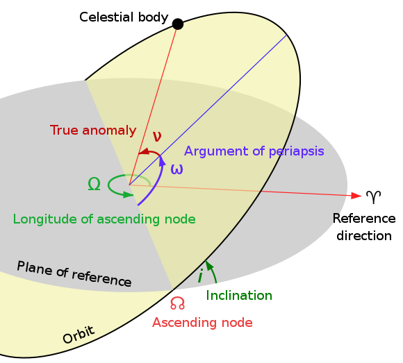

Introduction to the motion of spacecrafts, common orbits and maneuvers.
Definitions
mass: quantitive measure of inertia, or resistance to change in motion of a body
force: a vector action of one body on another
particle: a body of negligible dimensions, i.e. the dimensions
of the body are irrelevant to describe its' motion, or the force
acting on it
rigid body: a body that doens' deform, i.e. has constant mass
vector: a direction and a magnitude
scalar: a magnitude only
Newton's Laws of Motion
Describe the relationships between the motion of an object and the forces acting on it:
An object at rest remains at rest, and an object in motion remains in motion at constant speed and in a straight line unless acted on by an unbalanced force
The acceleration of an object depends on the mass of the object and the amount of force applied
Whenever one object exerts a force on another object, the second object exerts an equal and opposite on the first
Newton's Law of gravitation
Two bodies with masses $m_1$ and $m_2$ attract each other with a force proportional to the product of their masses, and inversely proportional to the square distance $r$ between them:
\[F = G \frac{m_1 m_2}{r^2}\]
Where, $G$ is the universal constant of gravitation
Kepler's Laws
All planets go around the Sun in a curve move, an elliptical orbit, with the Sun at one focus of the ellipse.
A line that connects a planet to the Sun sweeps out equal areas in equal times. Planets do not go around the Sun at a uniform speed, they move faster when they are nearer the Sun and more slowly when they are farther away.
The square of the period $T$ of any planet is proportional to the cube of the semi-major axis $r$ of its orbit: $T^2 \propto r^3$
Classical Orbital Elements
semi-major axis $a$
eccentricity $e$:
inclination $i$:
right ascencion $\Omega$
argument of perigee $\omega$
true anomaly $\nu$

Low Earth Orbit
...
...
...
Hohmnan Transfer
The Hohmnan transfer is a technique for transferring a spacecraft from one circular orbit around a central object to another circular orbit around the same object. In a nutshell the goal is to devise a elliptical orbit tangent to the initial and ending circular orbits It envolves two steps:
A first $\Delta \vec{V_1}$ is applied to put the spacecraft in an elliptical orbit with ...
A second $\Delta \vec{V_2}$ is applied to circularize the orbit on the target altitude.